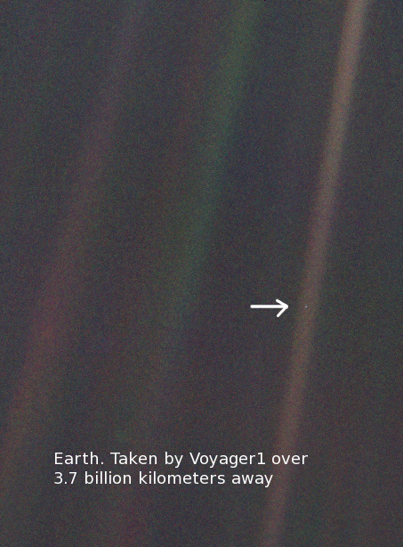

My name is Federico, I'm a bachelor student in physics and I have a lot of interests: software developing, Arduino programming, electronics and, of course, physics and astrophysics.
I started this website with the pourpose of sharing most of my projects with you and everyone who have curiosity and want to learn something.
I think sharing my work with other people is the only way to compare my ideas with someone else ideas in order to give an advice, improve myself and develop other ideas.
"Look again at that dot. That's here. That's home. That's us. On it everyone you love, everyone you know, everyone you ever heard of, every human being who ever was, lived out their lives. The aggregate of our joy and suffering, thousands of confident religions, ideologies, and economic doctrines, every hunter and forager, every hero and coward, every creator and destroyer of civilization, every king and peasant, every young couple in love, every mother and father, hopeful child, inventor and explorer, every teacher of morals, every corrupt politician, every "superstar," every "supreme leader," every saint and sinner in the history of our species lived there-on a mote of dust suspended in a sunbeam.
The Earth is a very small stage in a vast cosmic arena. Think of the endless cruelties visited by the inhabitants of one corner of this pixel on the scarcely distinguishable inhabitants of some other corner, how frequent their misunderstandings, how eager they are to kill one another, how fervent their hatreds. Think of the rivers of blood spilled by all those generals and emperors so that, in glory and triumph, they could become the momentary masters of a fraction of a dot.
Our posturings, our imagined self-importance, the delusion that we have some privileged position in the Universe, are challenged by this point of pale light. Our planet is a lonely speck in the great enveloping cosmic dark. In our obscurity, in all this vastness, there is no hint that help will come from elsewhere to save us from ourselves.
The Earth is the only world known so far to harbor life. There is nowhere else, at least in the near future, to which our species could migrate. Visit, yes. Settle, not yet. Like it or not, for the moment the Earth is where we make our stand.
It has been said that astronomy is a humbling and character-building experience. There is perhaps no better demonstration of the folly of human conceits than this distant image of our tiny world. To me, it underscores our responsibility to deal more kindly with one another, and to preserve and cherish the pale blue dot, the only home we've ever known."
"What is intelligence, anyway? It is only a word that people use to name those unknown processes with which our brains solve problems we call hard. But whenever you learn a skill yourself, you're less impressed or mystified when other people do the same. This is why the meaning of 'intelligence' seems so elusive: It describes not some definite thing but only the momentary horizon of our ignorance about how minds might work."
Last update: august 2017. UTC Time (time.is):